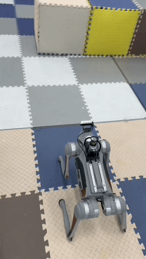
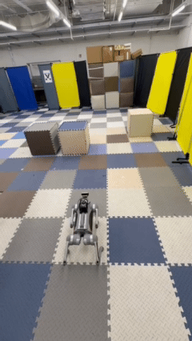
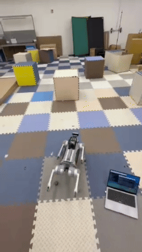
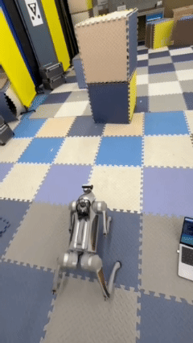
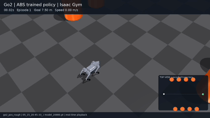
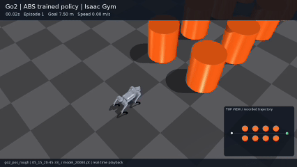
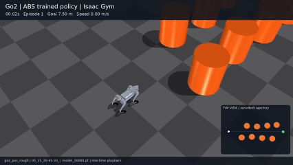
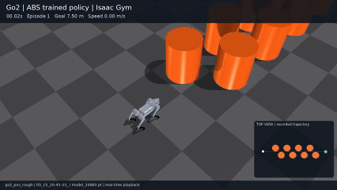

Go1-to-Go2 Model Adaptation
Replaced the robot model and updated joint ordering, action mapping, observation dimensions, PD gains, and actuator limits for Go2.
Based on the open-source Agile But Safe method, this project adapts a quadruped locomotion policy to Unitree Go2,
connecting simulation training, perception integration, and real-world deployment.
Four recorded rollouts · portrait view
real-01.gif
REAL / 01Unitree Go2 · qualitative deployment rollout
real-02.gif
REAL / 02Unitree Go2 · qualitative deployment rollout
real-03.gif
REAL / 03Unitree Go2 · qualitative deployment rollout
real-04.gif
REAL / 04Unitree Go2 · qualitative deployment rollout
Four on-robot recordings from the Go2 deployment environment. Select any demo to inspect the full loop.
Four policy rollouts · 2 × 2 layout
sim-01.gif
SIM / 01Isaac Gym · trained policy rollout
sim-02.gif
SIM / 02Isaac Gym · trained policy rollout
sim-03.gif
SIM / 03Isaac Gym · trained policy rollout
sim-04.gif
SIM / 04Isaac Gym · trained policy rollout
The simulation clips retain the top-down trajectory inset to make each obstacle layout and rollout path easy to compare.
Agile Policy · simulation to hardware
Replaced the robot model and updated joint ordering, action mapping, observation dimensions, PD gains, and actuator limits for Go2.
Converted RealSense D435i depth observations into forward distance rays, integrated MID360 LiDAR observations for the side and rear regions, and connected LIO-based state estimation.
Trained and validated the Go2 Agile Policy in Isaac Gym, then exported the trained policy to ONNX for onboard inference.
Adapted the control pipeline to Unitree SDK2/DDS, connected policy inference to low-level PD joint control, and deployed the runtime on Jetson Orin NX.
Used real-robot feedback to refine sensor payload properties, control and perception latency, localization noise, and motor constraints in simulation.
The real-world demonstrations on this page document qualitative Agile Policy rollouts on Unitree Go2.